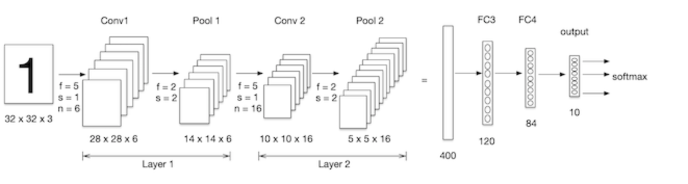

2.6 卷积神经网络(CNN)¶
学习目标
- 了解卷积神经网络的构成
- 知道卷积的原理以及计算过程
- 了解池化的作用以及计算过程

利用全连接神经网络对图像进行处理存在以下两个问题：
- 需要处理的数据量大，效率低
假如我们处理一张 1000×1000 像素的图片，参数量如下：
1000×1000×3=3,000,000
这么大量的数据处理起来是非常消耗资源的

- 图像在维度调整的过程中很难保留原有的特征，导致图像处理的准确率不高

假如有圆形是1，没有圆形是0，那么圆形的位置不同就会产生完全不同的数据表达。但是从图像的角度来看，图像的内容（本质）并没有发生变化，只是位置发生了变化。所以当我们移动图像中的物体，用全连接升降得到的结果会差异很大，这是不符合图像处理的要求的。
1.CNN网络的构成¶
CNN网络受人类视觉神经系统的启发，人类的视觉原理：从原始信号摄入开始（瞳孔摄入像素 Pixels），接着做初步处理（大脑皮层某些细胞发现边缘和方向），然后抽象（大脑判定，眼前的物体的形状，是圆形的），然后进一步抽象（大脑进一步判定该物体是只人脸）。下面是人脑进行人脸识别的一个示例：
CNN网络主要有三部分构成：卷积层、池化层和全连接层构成，其中卷积层负责提取图像中的局部特征；池化层用来大幅降低参数量级(降维)；全连接层类似人工神经网络的部分，用来输出想要的结果。

整个CNN网络结构如下图所示：

2. 卷积层¶
卷积层是卷积神经网络中的核心模块，卷积层的目的是提取输入特征图的特征，如下图所示，卷积核可以提取图像中的边缘信息。

2.1 卷积的计算方法¶
那卷积是怎么进行计算的呢？
卷积运算本质上就是在滤波器和输入数据的局部区域间做点积。

左上角的点计算方法：

同理可以计算其他各点，得到最终的卷积结果，
最后一点的计算方法是：
2.2 padding¶
在上述卷积过程中，特征图比原始图减小了很多，我们可以在原图像的周围进行padding,来保证在卷积过程中特征图大小不变。
2.3 stride¶
按照步长为1来移动卷积核，计算特征图如下所示：
如果我们把stride增大,比如设为2，也是可以提取特征图的，如下图所示：

2.4 多通道卷积¶
实际中的图像都是多个通道组成的，我们怎么计算卷积呢？
计算方法如下：当输入有多个通道（channel）时(例如图片可以有 RGB 三个通道)，卷积核需要拥有相同的channel数,每个卷积核 channel 与输入层的对应 channel 进行卷积，将每个 channel 的卷积结果按位相加得到最终的 Feature Map

2.5 多卷积核卷积¶
如果有多个卷积核时怎么计算呢？当有多个卷积核时，每个卷积核学习到不同的特征，对应产生包含多个 channel 的 Feature Map, 例如下图有两个 filter，所以 output 有两个 channel。
2.6 特征图大小¶
输出特征图的大小与以下参数息息相关： * size:卷积核/过滤器大小，一般会选择为奇数，比如有1 * 1， 3 * 3， 5 * 5 * padding：零填充的方式 * stride:步长
那计算方法如下图所示：
输入特征图为5x5，卷积核为3x3，外加padding 为1，则其输出尺寸为：

如下图所示：
在tf.keras中卷积核的实现使用
tf.keras.layers.Conv2D(
filters, kernel_size, strides=(1, 1), padding='valid',
activation=None
)
主要参数说明如下：

3 池化层(Pooling)¶
池化层迎来降低了后续网络层的输入维度，缩减模型大小，提高计算速度，并提高了Feature Map 的鲁棒性，防止过拟合，
它主要对卷积层学习到的特征图进行下采样（subsampling）处理，主要由两种
3.1 最大池化¶
- Max Pooling,取窗口内的最大值作为输出，这种方式使用较广泛。
在tf.keras中实现的方法是：
tf.keras.layers.MaxPool2D(
pool_size=(2, 2), strides=None, padding='valid'
)
参数：
pool_size: 池化窗口的大小
strides: 窗口移动的步长，默认为1
padding: 是否进行填充，默认是不进行填充的
3.2 平均池化¶
Avg Pooling,取窗口内的所有值的均值作为输出
在tf.keras中实现池化的方法是：
tf.keras.layers.AveragePooling2D(
pool_size=(2, 2), strides=None, padding='valid'
)
4. 全连接层¶
全连接层位于CNN网络的末端，经过卷积层的特征提取与池化层的降维后，将特征图转换成一维向量送入到全连接层中进行分类或回归的操作。
在tf.keras中全连接层使用tf.keras.dense实现。
5.卷积神经网络的构建¶
我们构建卷积神经网络在mnist数据集上进行处理，如下图所示：LeNet-5是一个较简单的卷积神经网络, 输入的二维图像，先经过两次卷积层,池化层，再经过全连接层，最后使用softmax分类作为输出层。

导入工具包：
import tensorflow as tf
# 数据集
from tensorflow.keras.datasets import mnist
5.1 数据加载¶
与神经网络的案例一致，首先加载数据集：
(train_images, train_labels), (test_images, test_labels) = mnist.load_data()
5.2 数据处理¶
卷积神经网络的输入要求是：N H W C ，分别是图片数量，图片高度，图片宽度和图片的通道，因为是灰度图，通道为1.
# 数据处理：num,h,w,c
# 训练集数据
train_images = tf.reshape(train_images, (train_images.shape[0],train_images.shape[1],train_images.shape[2], 1))
print(train_images.shape)
# 测试集数据
test_images = tf.reshape(test_images, (test_images.shape[0],test_images.shape[1],test_images.shape[2], 1))
结果为：
(60000, 28, 28, 1)
5.3 模型搭建¶
Lenet-5模型输入的二维图像，先经过两次卷积层,池化层，再经过全连接层，最后使用softmax分类作为输出层，模型构建如下：
# 模型构建
net = tf.keras.models.Sequential([
# 卷积层：6个5*5的卷积核，激活是sigmoid
tf.keras.layers.Conv2D(filters=6,kernel_size=5,activation='sigmoid',input_shape= (28,28,1)),
# 最大池化
tf.keras.layers.MaxPool2D(pool_size=2, strides=2),
# 卷积层：16个5*5的卷积核,激活是sigmoid
tf.keras.layers.Conv2D(filters=16,kernel_size=5,activation='sigmoid'),
# 最大池化
tf.keras.layers.MaxPool2D(pool_size=2, strides=2),
# 维度调整为1维数据
tf.keras.layers.Flatten(),
# 全卷积层，激活sigmoid
tf.keras.layers.Dense(120,activation='sigmoid'),
# 全卷积层，激活sigmoid
tf.keras.layers.Dense(84,activation='sigmoid'),
# 全卷积层，激活softmax
tf.keras.layers.Dense(10,activation='softmax')
])
我们通过net.summary()查看网络结构：
Model: "sequential_11"
_________________________________________________________________
Layer (type) Output Shape Param #
=================================================================
conv2d_4 (Conv2D) (None, 24, 24, 6) 156
_________________________________________________________________
max_pooling2d_4 (MaxPooling2 (None, 12, 12, 6) 0
_________________________________________________________________
conv2d_5 (Conv2D) (None, 8, 8, 16) 2416
_________________________________________________________________
max_pooling2d_5 (MaxPooling2 (None, 4, 4, 16) 0
_________________________________________________________________
flatten_2 (Flatten) (None, 256) 0
_________________________________________________________________
dense_25 (Dense) (None, 120) 30840
_________________________________________________________________
dense_26 (Dense) (None, 84) 10164
_________________________________________________________________
dense_27 (Dense) (None, 10) 850
=================================================================
Total params: 44,426
Trainable params: 44,426
Non-trainable params: 0
______________________________________________________________
5.4 模型编译¶
设置优化器和损失函数：
# 优化器
optimizer = tf.keras.optimizers.SGD(learning_rate=0.9)
# 模型编译：损失函数，优化器和评价指标
net.compile(optimizer=optimizer,
loss='sparse_categorical_crossentropy',
metrics=['accuracy'])
5.5 模型训练¶
模型训练：
# 模型训练
net.fit(train_images, train_labels, epochs=5, validation_split=0.1)
训练流程：
Epoch 1/5
1688/1688 [==============================] - 10s 6ms/step - loss: 0.8255 - accuracy: 0.6990 - val_loss: 0.1458 - val_accuracy: 0.9543
Epoch 2/5
1688/1688 [==============================] - 10s 6ms/step - loss: 0.1268 - accuracy: 0.9606 - val_loss: 0.0878 - val_accuracy: 0.9717
Epoch 3/5
1688/1688 [==============================] - 10s 6ms/step - loss: 0.1054 - accuracy: 0.9664 - val_loss: 0.1025 - val_accuracy: 0.9688
Epoch 4/5
1688/1688 [==============================] - 11s 6ms/step - loss: 0.0810 - accuracy: 0.9742 - val_loss: 0.0656 - val_accuracy: 0.9807
Epoch 5/5
1688/1688 [==============================] - 11s 6ms/step - loss: 0.0732 - accuracy: 0.9765 - val_loss: 0.0702 - val_accuracy: 0.9807
5.6 模型评估¶
# 模型评估
score = net.evaluate(test_images, test_labels, verbose=1)
print('Test accuracy:', score[1])
输出为：
313/313 [==============================] - 1s 2ms/step - loss: 0.0689 - accuracy: 0.9780
Test accuracy: 0.9779999852180481
与使用全连接网络相比，准确度提高了很多。
- 卷积神经网路的组成
卷积层，池化层，全连接层
- 卷积层
卷积的计算过程，stride,padding...
- 池化层
最大池化和平均池化
- CNN结构的实现和构建实现程序